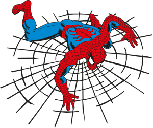
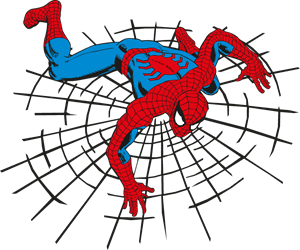
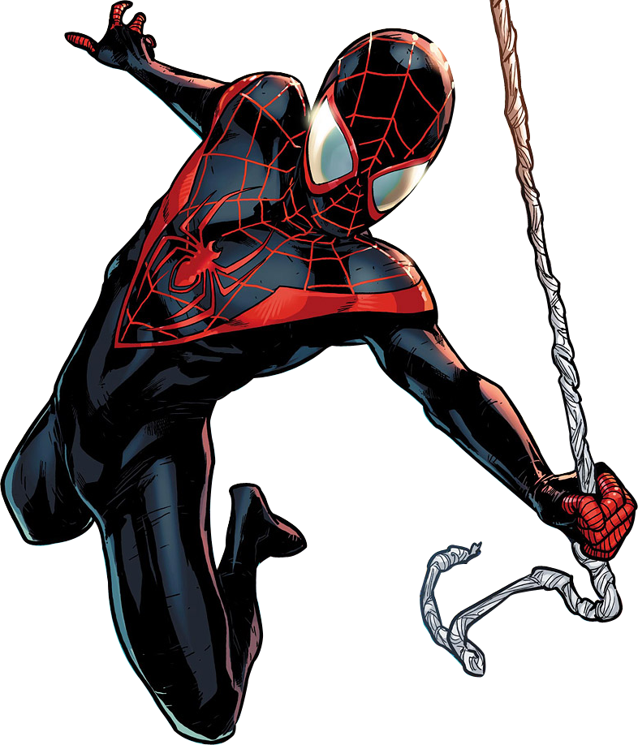
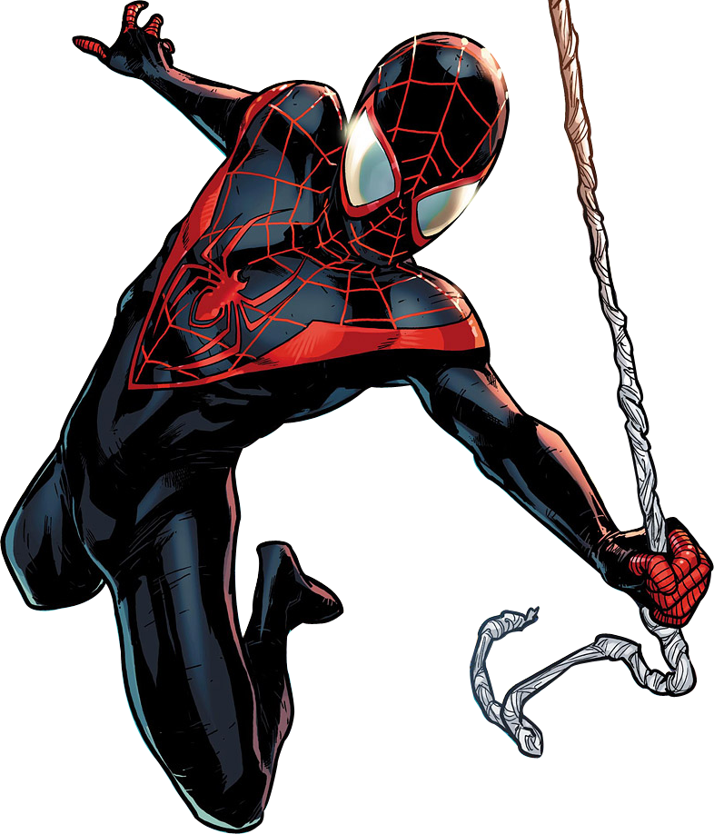

 


Introdução
No 4° bimestre do nosso ano letivo, o professor João Saturnino disponibilizou dois links do Khan para os nossos estudos em probabilidade e estatística.
Esse portfólio se dedica a mostrar os resultados dos meus estudos individuais, de uma forma um pouco mais dinâmica e com "a minha cara", bem... Espero que goste :3


diário de bordo:
No primeiro link, de conteúdo "Probabilidade e Estatística", com se pode ver, eu estava com status de "Familiaridade" em quase todo o conteúdo, com cerca de 44% de domínio.
Bem... Dessa forma aeu fui direto do teste de unidade para completar de vez o conteúdo (Com outras abas abertas além do teste, para ver sobre o conteúdo enquanto fazia as questões), Após a primeira tentativa concluida, como pode-se ver, eu tive uma certa dificuldade com uma unidade do conteúdo, mas como eu não sou de desistir tão fácil, eu fui diretamente no teste de unidade que eu tivve dificuldade, e fiz somente ele, assim conseguindo atingir proeficiente em todo o conteúdo de probablidade e estatística.


diário de bordo:
No segundo link, de conteúdo "Probabilidade", como pode-se notar, eu já tinha parte do conteúdo dominado, porém, como ainda faltava o restante, eu novamente segui diretamente para o teste de unidade para a conclusão imediata (novamente com outras abas abertas para consultar o conteúdo, no próprio Khan Academy, enquanto fazia as questões).
No final, consegui melhorar minhas habilidades em todo o conteúdo de Probabilidade.
conclusão
Ao final dos meus estudos utilizando os links da platafora Khan Academy, disponibilizados pelo professor João Saturnino, eu fui capaz de desenvolver e melhorar minhas habilidades de calculo na probabilidade e estatística.